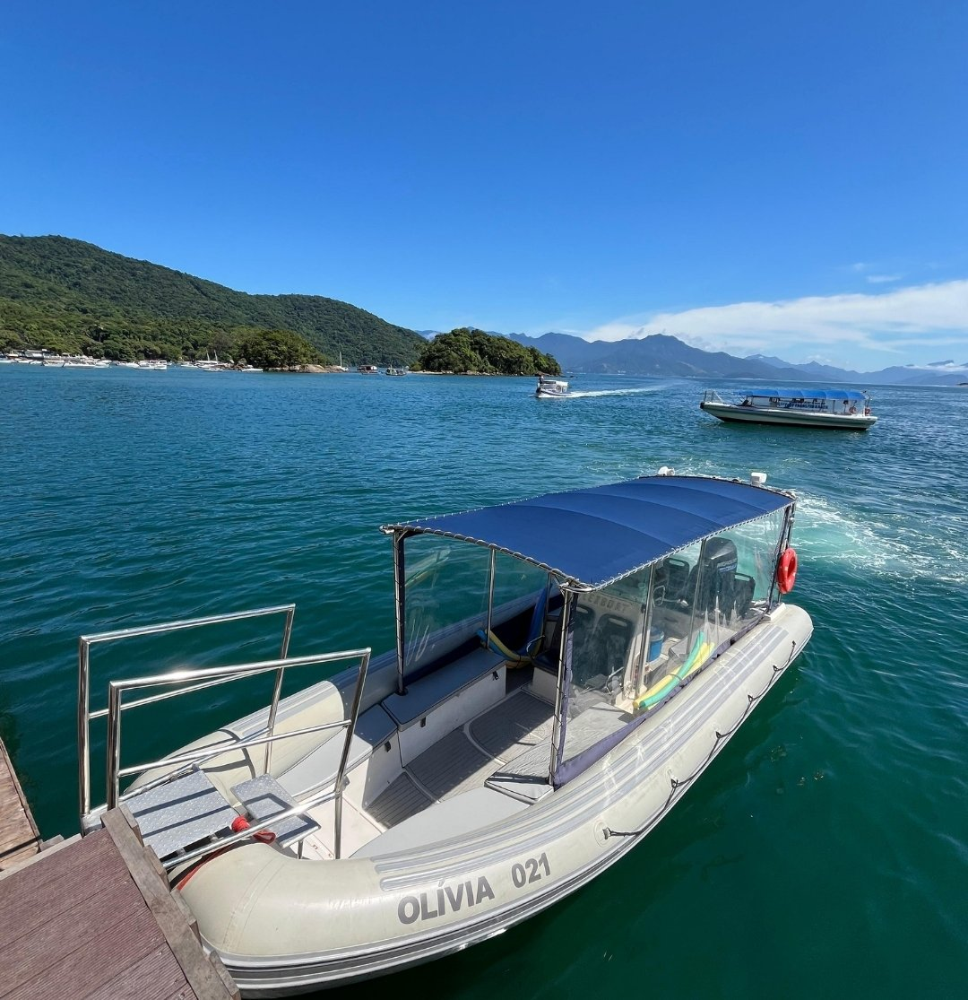

RUMO 090°

Ilha Tour 90°
Lagoa Azul e os pontos exclusivos da Costa Norte, fora do roteiro de todo mundo.
Ver roteiro
O ponto mais próximo do Rio, com estacionamento em conta.
Fazemos a travessia entre Mangaratiba e a Vila do Abraão, na Ilha Grande, em Flex Boat — cerca de 40 minutos de mar. Mangaratiba é o ponto mais próximo do Rio de Janeiro e tem estacionamento em conta, o que torna a viagem mais rápida e tranquila para quem vem da cidade. Fomos pioneiros nessa rota e hoje ela é referência na região.
Chegue ao cais cerca de 20 minutos antes do horário. Horários sujeitos às condições de clima e maré.
Não inclui: Transfer terrestre até Mangaratiba · Refeições · Bagagem excedente (pode ser levada conforme espaço, com taxa).
Você escolhe ida, volta ou ida e volta. Fechar ida e volta garante a sua vaga no retorno e simplifica a logística.
Cada passageiro leva incluso 1 mala de mão de até 10 kg + 1 mala de até 23 kg (padrão aviação). Volumes extras podem ser transportados conforme o espaço disponível, com taxa por volume — combine com a gente pelo WhatsApp com antecedência. Crianças de 0 a 3 anos não pagam e viajam no colo.
A travessia acontece normalmente. Mesmo com a embarcação coberta, você pode se molhar um pouco — vale levar uma capa de chuva leve. Faz parte da experiência.
Em alguns dias o mar fica mais movimentado (às vezes até com sol). É normal e seguro. Se você enjoa fácil, evite comer muito antes de embarcar.
Lagoa Azul e os pontos exclusivos da Costa Norte, fora do roteiro de todo mundo.
Ver roteiro
Lagoa Azul, Lagoa Verde e as preferidas da Costa Norte, sobre águas tranquilas e cristalinas.
Ver roteiro
As ilhas mais desejadas de Angra: água cristalina, praias de cartão-postal e muito snorkel.
Ver roteiro